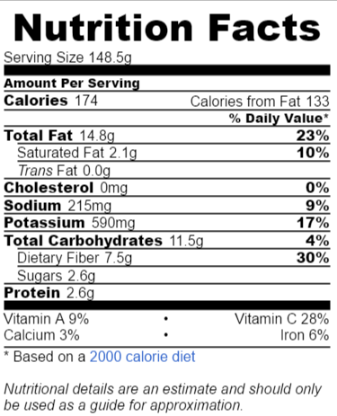

Salsamole
User: dbang | Favorites: 2437
Prep Time: 5 min
Ingredients: 0.5 cup salsa, 2 mashed avocados, 2 tablespoons lime juice,
2 tablespoons chopped cilantro, salt
Instructions:
1. Mix all ingredients together.
2. Serve with tortilla chips.
